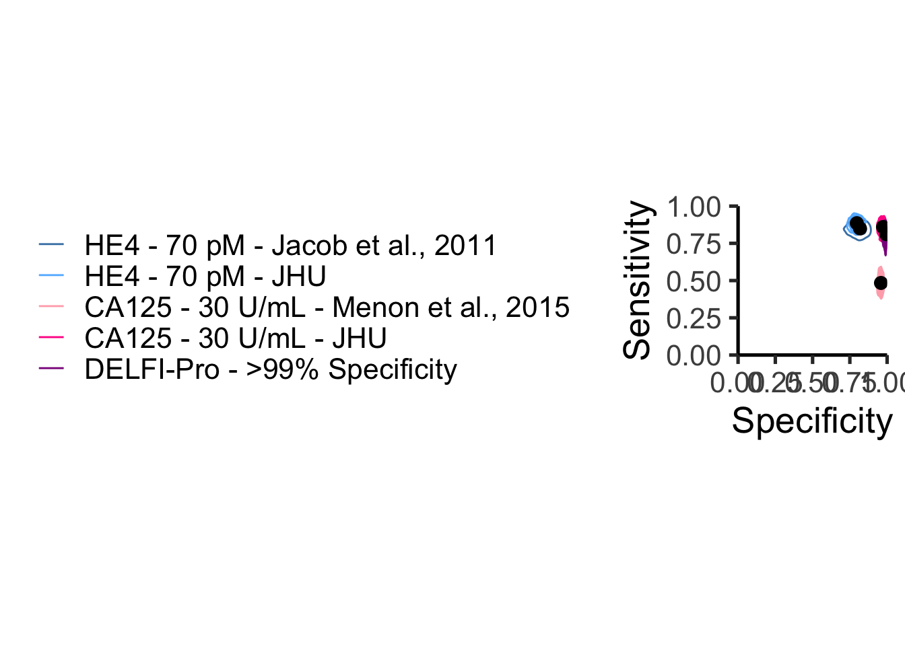
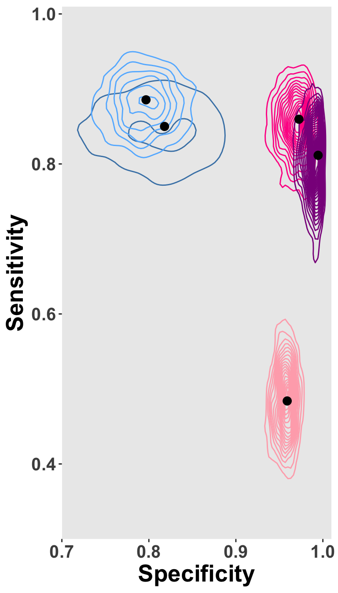
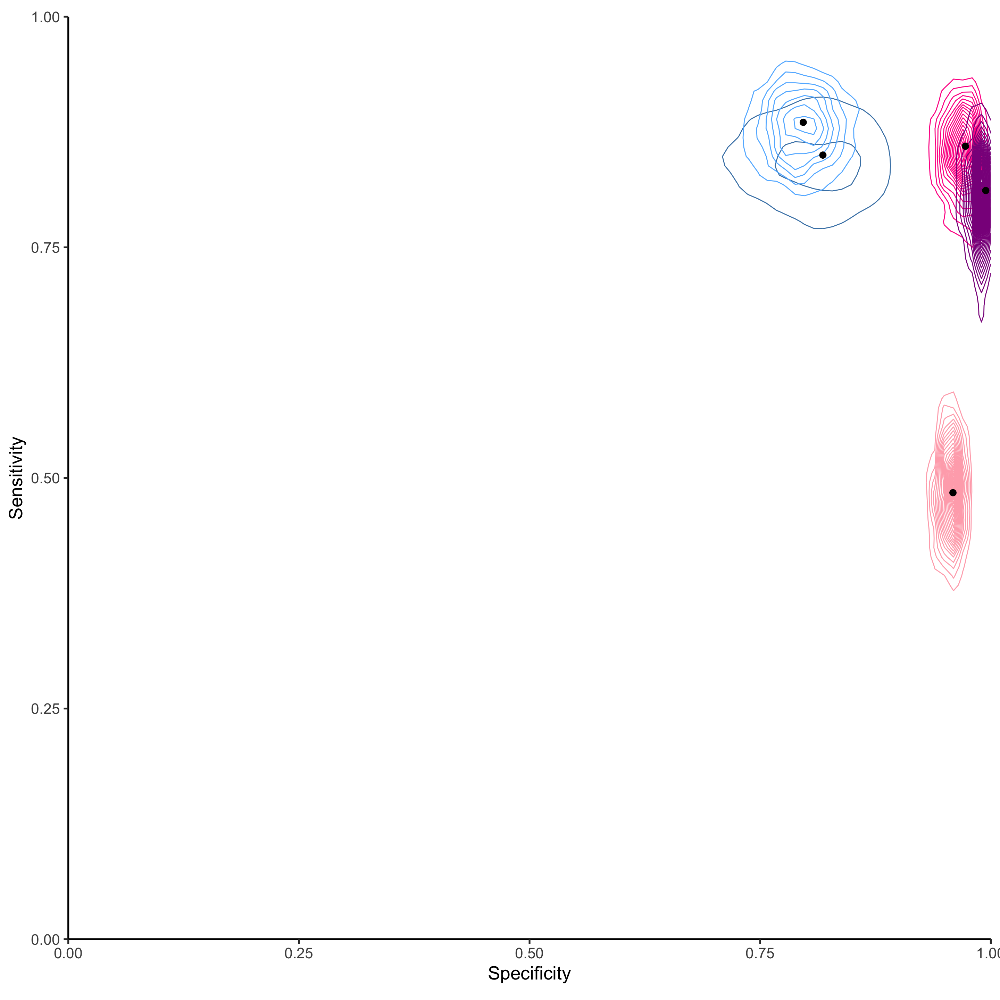
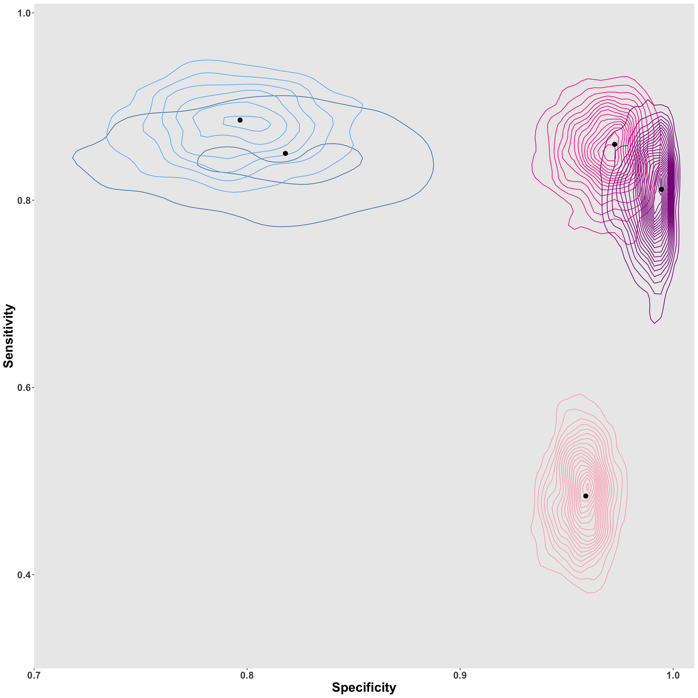
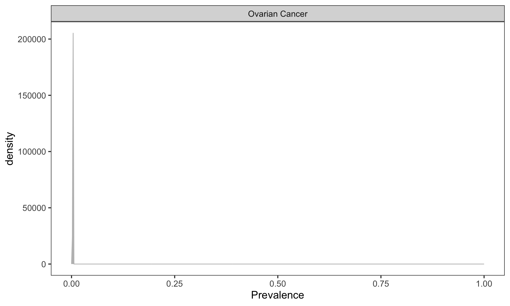
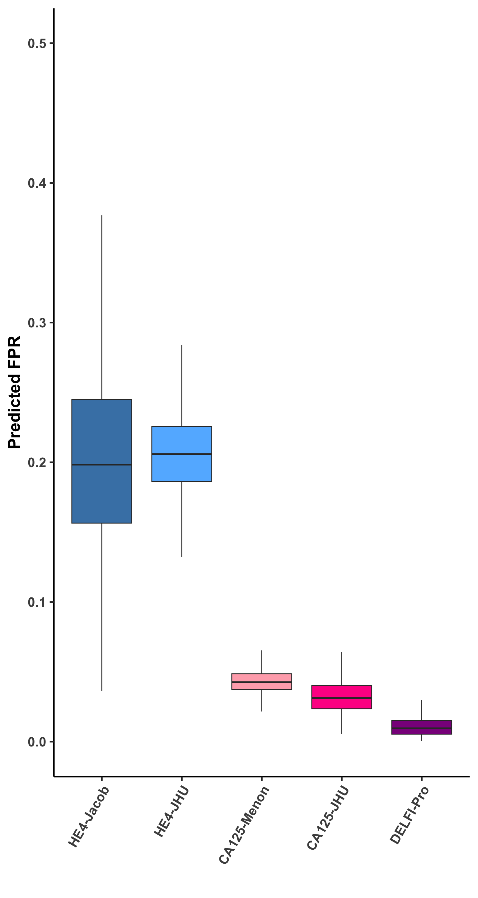
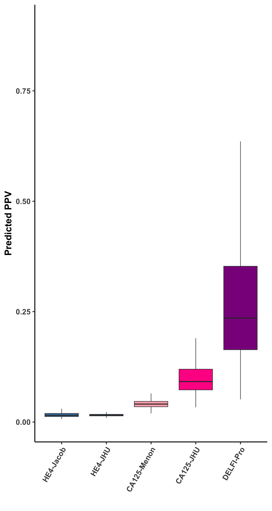
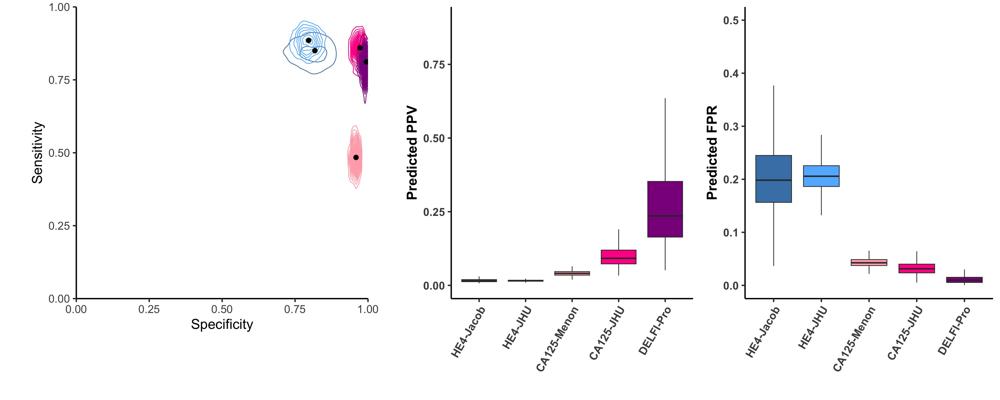

Last updated: 2024-08-02
Checks: 7 0
Knit directory: delfipro2024/
This reproducible R Markdown analysis was created with workflowr (version 1.7.1). The Checks tab describes the reproducibility checks that were applied when the results were created. The Past versions tab lists the development history.
Great! Since the R Markdown file has been committed to the Git repository, you know the exact version of the code that produced these results.
Great job! The global environment was empty. Objects defined in the global environment can affect the analysis in your R Markdown file in unknown ways. For reproduciblity it’s best to always run the code in an empty environment.
The command set.seed(20240612) was run prior to running
the code in the R Markdown file. Setting a seed ensures that any results
that rely on randomness, e.g. subsampling or permutations, are
reproducible.
Great job! Recording the operating system, R version, and package versions is critical for reproducibility.
Nice! There were no cached chunks for this analysis, so you can be confident that you successfully produced the results during this run.
Great job! Using relative paths to the files within your workflowr project makes it easier to run your code on other machines.
Great! You are using Git for version control. Tracking code development and connecting the code version to the results is critical for reproducibility.
The results in this page were generated with repository version 7c3f17e. See the Past versions tab to see a history of the changes made to the R Markdown and HTML files.
Note that you need to be careful to ensure that all relevant files for
the analysis have been committed to Git prior to generating the results
(you can use wflow_publish or
wflow_git_commit). workflowr only checks the R Markdown
file, but you know if there are other scripts or data files that it
depends on. Below is the status of the Git repository when the results
were generated:
Ignored files:
Ignored: renv/library/
Ignored: renv/staging/
Note that any generated files, e.g. HTML, png, CSS, etc., are not included in this status report because it is ok for generated content to have uncommitted changes.
These are the previous versions of the repository in which changes were
made to the R Markdown (analysis/4bcd.Rmd) and HTML
(docs/4bcd.html) files. If you’ve configured a remote Git
repository (see ?wflow_git_remote), click on the hyperlinks
in the table below to view the files as they were in that past version.
| File | Version | Author | Date | Message |
|---|---|---|---|---|
| html | 89a4055 | rscharpf | 2024-08-01 | Build site. |
| Rmd | 0bc9e1d | rscharpf | 2024-08-01 | Use argument ‘imsure’ instead of greater than in epi.betabuster |
| html | 28c6a1b | shay-279 | 2024-08-01 | aa fix more stuff |
| Rmd | c74d1ee | shay-279 | 2024-08-01 | start |
| html | c74d1ee | shay-279 | 2024-08-01 | start |
In a future study of 100,000 participants, what is our predictive distribution for the following: - number individuals screened - liver cancers detected by delfi - liver cancers detected by ultrasound (US) + alpha fetal protein (AFP) - false positives leading to unnecessary follow-up procedures by these approaches - individuals with liver cancer not identified ( false negatives )
The size of the screening study is determined by the number of samples collected in a finite period of time. Studies with lower adherence to surveillance guidelines have fewer participants.
find_params <- function(i, dat){
dat <- dat[i, ]
params <- epi.betabuster(mode=dat$mode,
conf=0.975,
##greaterthan=TRUE,
imsure="greater than",
x=dat$lower,
max.shape1=500,
conf.level=0.95)
dat$shape1 <- params$shape1
dat$shape2 <- params$shape2
dat
}
params <- seq_len(nrow(tools)) %>%
map_dfr(find_params, dat=tools)Warning: The estimated value of shape1 equals max.shape1. Consider increasing
the value of max.shape1.simulate_performance <- function(i, params, N=1000){
p <- params[i, ]
x <- rbeta(N, shape1=p$shape1, shape2=p$shape2)
x
}
simvalues <- seq_len(nrow(tools)) %>%
map(simulate_performance, params=params)
params$simulation <- simvalues
params2 <- params %>%
filter(metric != "adherence") %>%
pivot_wider(id_cols=c("tool", "population"),
names_from="metric",
values_from="simulation") %>%
unnest(c("sensitivity", "specificity"))
adhere <- params %>%
filter(metric=="adherence") %>%
unnest(simulation) %>%
select(tool, population, simulation) %>%
set_colnames(c("tool", "population", "adherence")) %>%
nest(adherence=adherence)
params3 <- params2 %>%
nest(performance=c(sensitivity, specificity))
params4 <- left_join(params3, adhere,
by=c("tool", "population"))
panelA.data <- params2 #%>%
# mutate(population=factor(population,
#rev(c("High risk", "Early stage"))))panelA.data<-panelA.data #%>% filter(tool %in% c("DELFI", "US + AFP"))
#panelA.data$tool<-factor(panelA.data$tool,levels=c("US + AFP","DELFI"))
pt_esti<-tools %>% select(tool,mode,metric) %>% filter(metric %in% c("sensitivity","specificity"))%>%spread(key=metric,value=mode)
panelA.data$tool<-factor(panelA.data$tool,levels=c("HE4_70_Jacob","HE4_70_jhu","CA125_30_ukctocs","CA125_30_jhu","DELFI-Pro"))
panelA <- panelA.data %>%
ggplot(aes(specificity, sensitivity)) +
theme_classic(base_size=20) +
theme(panel.grid=element_blank()) +
geom_density2d(aes(color=tool),bins=25, size=.5) +
scale_y_continuous(expand=c(0, 0), limits=c(0, 1)) +
scale_x_continuous(expand=c(0, 0), limits=c(0, 1)) +
geom_point(data=pt_esti,aes(specificity, sensitivity), size=3) +
##xlim(c(0.15, 1)) +
##ylim(c(0.15, 1)) +
##facet_wrap(~population, ncol=1) +
theme(strip.background=element_blank(),
legend.position=c(0.2, 0.25)) +
guides(color=guide_legend(title="",
override.aes=list(size=1.5))) +
xlab("Specificity") +
ylab("Sensitivity")+theme(legend.position="left")+
scale_color_manual(values=c("steelblue","steelblue1","lightpink1","deeppink","darkmagenta"),
labels=c("HE4 - 70 pM - Jacob et al., 2011","HE4 - 70 pM - JHU","CA125 - 30 U/mL - Menon et al., 2015","CA125 - 30 U/mL - JHU", "DELFI-Pro - >99% Specificity"))+coord_fixed()Warning: Using `size` aesthetic for lines was deprecated in ggplot2 3.4.0.
ℹ Please use `linewidth` instead.
This warning is displayed once every 8 hours.
Call `lifecycle::last_lifecycle_warnings()` to see where this warning was
generated.Warning: A numeric `legend.position` argument in `theme()` was deprecated in ggplot2
3.5.0.
ℹ Please use the `legend.position.inside` argument of `theme()` instead.
This warning is displayed once every 8 hours.
Call `lifecycle::last_lifecycle_warnings()` to see where this warning was
generated.panelA
| Version | Author | Date |
|---|---|---|
| c74d1ee | shay-279 | 2024-08-01 |
#panelA <- ggplotGrob(panelA)#panelA.data$tool<-factor(panelA.data$tool,levels=c("US + AFP","DELFI"))
panelA2 <- panelA.data %>%
ggplot(aes(specificity, sensitivity)) +
theme(panel.grid=element_blank()) +
geom_density2d(aes(color=tool),bins=25, size=.5) +
scale_y_continuous(expand=c(0, 0), limits=c(0.3, 1.01)) +
scale_x_continuous(expand=c(0, 0), limits=c(0.7, 1.01)) +
geom_point(data=pt_esti,aes(specificity, sensitivity), size=3) +
##xlim(c(0.15, 1)) +
##ylim(c(0.15, 1)) +
##facet_wrap(~population, ncol=1) +
theme(strip.background=element_blank(),
legend.position=c(0.2, 0.25),
panel.grid.major = element_blank(),
panel.grid.minor = element_blank(),
axis.text.x=element_text(size=15),
axis.text.y=element_text(size=15),
axis.title.x=element_text(size=20),
axis.title.y=element_text(size=20)
) +
guides(color=guide_legend(title="",
override.aes=list(size=1.5))) +
xlab("Specificity") +
ylab("Sensitivity")+theme(legend.position="none")+
scale_color_manual(values=c("steelblue","steelblue1","lightpink1","deeppink","darkmagenta"),
labels=c("HE4 - 70 pM - Jacob et al., 2011","HE4 - 70 pM - JHU","CA125 - 30 U/mL - Menon et al., 2015","CA125 - 30 U/mL - JHU", "DELFI-Pro - >99% Specificity"))+theme(axis.title = element_text(face = "bold"),
axis.text.x=element_text(face = "bold"),
axis.text.y=element_text(face = "bold"))
panelA2Warning: Removed 90 rows containing non-finite outside the scale range
(`stat_density2d()`).
#panelA2 <- ggplotGrob(panelA2)set1<-panelA+theme(legend.position="none")#+patchwork::inset_element(panelA2,.1,.1,.6,.6)
l<-get_legend(panelA)Warning in get_plot_component(plot, "guide-box"): Multiple components found;
returning the first one. To return all, use `return_all = TRUE`.set1
| Version | Author | Date |
|---|---|---|
| c74d1ee | shay-279 | 2024-08-01 |
lzeroGrob[NULL] panelA2Warning: Removed 90 rows containing non-finite outside the scale range
(`stat_density2d()`).
#I CHANGED THIS SECTION – ASK ROB
#prev.wide <- rdirichlet(1000, cohorts$prevalence*1000) %>%
# as_tibble() %>%
# set_colnames(cohorts$disease)
#prev <- epi.betabuster(mode=cohorts$prevalence[1],
# conf=0.975,
# greaterthan=TRUE,
# x=cohorts$prevalence[1]/10,
# max.shape1=500,
# conf.level=0.95)
s1<-236511
#s1<-19680
#s1<-2055
#s2<-(274633642/2)-s1
s2<-63757324-s1
#s2<-202562-s1
#prev <- rbeta(1000, shape1=prev$shape1, shape2=prev$shape2)
prev <- rbeta(1000, shape1=s1, shape2=s2)
#prev.long <- prev.wide %>%
# pivot_longer(cols=all_of(cohorts$disease), names_to="Disease",
# values_to="Prevalence")
prev.long<-tibble(Disease="Ovarian Cancer",Prevalence=prev)
prev.long %>%
ggplot(aes(Prevalence)) +
geom_density(color="gray", fill="gray") +
theme_bw(base_size=15) +
facet_wrap(~Disease, scales="free_y") +
theme(panel.grid=element_blank()) +
xlim(c(0, 1))
prev3 <- tibble(prevalence=prev)
params4$prevalence <- rep(prev3, 5)sample 100,000 people from high risk population (multinomial)
subsample based on adherence
calculate performance statistics
repeat 1-3 1000 times
perf <- function(i, object, N=100e3){
dat <- unnest(object[i, ], c("performance",
"adherence",
"prevalence"))
L <- nrow(dat)
set.seed(149491) ## use same random number seed to capture differences in parameters
screened <- rbinom(L, size=N, prob=dat$adherence)
## prevalence
P <- rbinom(L, size=screened, prob=dat$prevalence) ## P = FN + TP
N <- screened - P ## N = TN + FP
TP <- rbinom(L, size=P, prob=dat$sensitivity)
FP <- rbinom(L, size=N, prob=(1-dat$specificity))
TN <- N - FP ## N = FP + TN
FN <- P - TP
fpr <- FP/N
fnr <- FN/P
tnr <- TN/N
tpr <- TP/P ## sensitivity
acc <- (TP+TN)/(P+N)
err <- (FP+FN)/(P+N)
ppv <- TP/(TP+FP)
npv <- TN/(TN+FN)
stats <- tibble("P"=P, "N"=N, "TP"=TP, "FP"=FP, "TN"=TN,
"FN"=FN, "acc"=acc, "err"=err,
"fpr"=fpr, "fnr"=fnr, "tnr"=tnr,
"tpr"=tpr, "ppv"=ppv, "npv"=npv,
"number_screened"=screened)
stats2 <- bind_cols(dat, stats)
stats2
}## for now, we only care about HCC versus not HCC
params5 <- seq_len(nrow(params4)) %>%
map_dfr(perf, params4) #%>%
#filter(tool %in% c("DELFI", "US + AFP"))
#There are 10 simulations in which there were 0 cases of ovarian cancer, so FNR and TPR end up NaN but should be 0
params5 <- params5 %>% mutate(fnr=if_else(is.na(fnr),0,fnr))
params5 <- params5 %>% mutate(tpr=if_else(is.na(tpr),0,tpr))
montecarlo <- params5I want to plot all metrics
dat<-montecarlo %>% select(fpr,tool)
dat<-dat %>% gather(key=metric,value=score,-tool)
#dat<-dat %>% filter(tool %in% c("CA125_30_ukctocs","CA125_30_jhu","HE4_70_Jacob","HE4_70_jhu","DELFI-Pro"))
dat$tool<-factor(dat$tool,levels=c("HE4_70_Jacob","HE4_70_jhu","CA125_30_ukctocs","CA125_30_jhu","DELFI-Pro"))
#colors=c("goldenrod1","darkorange","goldenrod3","darkorange2","goldenrod4","darkorange3","dodgerblue","cyan2","cyan4","violetred4")
set2<-ggplot(dat,aes(x=tool,y=score,fill=tool))+geom_boxplot(outlier.shape=NA)+theme_classic(base_size=20)+ylim(0,.5)+
scale_fill_manual(values=c("steelblue","steelblue1","lightpink1","deeppink","darkmagenta"),
labels=c("HE4 - 70 pM - Jacob et al., 2011","HE4 - 70 pM - JHU","CA125 - 30 U/mL - Menon et al., 2015","CA125 - 30 U/mL - JHU", "DELFI-Pro - >99% Specificity"))+theme(axis.text.x=element_text(angle=60,vjust = 1, hjust=1))+xlab("")+ylab("Predicted FPR")+theme(legend.position="none")+
scale_x_discrete(labels=c("HE4-Jacob","HE4-JHU","CA125-Menon","CA125-JHU","DELFI-Pro"))+theme(axis.title = element_text(face = "bold"),
axis.text.x=element_text(face = "bold"),
axis.text.y=element_text(face = "bold"))
set2
| Version | Author | Date |
|---|---|---|
| c74d1ee | shay-279 | 2024-08-01 |
dat %>% group_by(tool) %>% summarize(mean(score))# A tibble: 5 × 2
tool `mean(score)`
<fct> <dbl>
1 HE4_70_Jacob 0.205
2 HE4_70_jhu 0.206
3 CA125_30_ukctocs 0.0431
4 CA125_30_jhu 0.0326
5 DELFI-Pro 0.0113dat %>% group_by(tool) %>% summarize(med=median(score),perc_fpr=med*100,ci_low=round(quantile(score, 0.025), 4)*100,ci_high=round(quantile(score, 0.975), 4)*100)#,sd=sd(score)*100)# A tibble: 5 × 5
tool med perc_fpr ci_low ci_high
<fct> <dbl> <dbl> <dbl> <dbl>
1 HE4_70_Jacob 0.198 19.8 9.75 35.0
2 HE4_70_jhu 0.206 20.6 14.9 26.7
3 CA125_30_ukctocs 0.0426 4.26 2.7 6.25
4 CA125_30_jhu 0.0312 3.12 1.19 6.15
5 DELFI-Pro 0.00953 0.953 0.14 3.1 dat<-montecarlo %>% select(ppv,tool)
dat<-dat %>% gather(key=metric,value=score,-tool)
#dat<-dat %>% filter(tool %in% c("CA125_30_ukctocs","CA125_30_jhu","HE4_70_Jacob","HE4_70_jhu","DELFI-Pro"))
dat$tool<-factor(dat$tool,levels=c("HE4_70_Jacob","HE4_70_jhu","CA125_30_ukctocs","CA125_30_jhu","DELFI-Pro"))
#colors=c("goldenrod1","darkorange","goldenrod3","darkorange2","goldenrod4","darkorange3","dodgerblue","cyan2","cyan4","violetred4")
set3<-ggplot(dat,aes(x=tool,y=score,fill=tool))+geom_boxplot(outlier.shape=NA)+theme_classic(base_size=20)+ylim(0,.9)+
scale_fill_manual(values=c("steelblue","steelblue1","lightpink1","deeppink","darkmagenta"),
labels=c("HE4 - 70 pM - Jacob et al., 2011","HE4 - 70 pM - JHU","CA125 - 30 U/mL - Menon et al., 2015","CA125 - 30 U/mL - JHU", "DELFI-Pro - >99% Specificity"))+theme(axis.text.x=element_text(angle=60,vjust = 1, hjust=1))+xlab("")+ylab("Predicted PPV")+theme(legend.position="none")+
scale_x_discrete(labels=c("HE4-Jacob","HE4-JHU","CA125-Menon","CA125-JHU","DELFI-Pro"))+theme(axis.title = element_text(face = "bold"),
axis.text.x=element_text(face = "bold"),
axis.text.y=element_text(face = "bold"))
set3
| Version | Author | Date |
|---|---|---|
| c74d1ee | shay-279 | 2024-08-01 |
dat %>% group_by(tool) %>% summarize(mean(score))# A tibble: 5 × 2
tool `mean(score)`
<fct> <dbl>
1 HE4_70_Jacob 0.0167
2 HE4_70_jhu 0.0159
3 CA125_30_ukctocs 0.0417
4 CA125_30_jhu 0.101
5 DELFI-Pro 0.278 dat %>% group_by(tool) %>% summarize(med=median(score),perc_ppv=med*100,ci_low=round(quantile(score, 0.025), 4)*100,ci_high=round(quantile(score, 0.975), 4)*100)#,sd=sd(score)*100)# A tibble: 5 × 5
tool med perc_ppv ci_low ci_high
<fct> <dbl> <dbl> <dbl> <dbl>
1 HE4_70_Jacob 0.0153 1.53 0.87 3.25
2 HE4_70_jhu 0.0156 1.56 1.15 2.21
3 CA125_30_ukctocs 0.0407 4.07 2.61 6.63
4 CA125_30_jhu 0.0917 9.17 4.92 20.6
5 DELFI-Pro 0.236 23.6 8.73 68.5 plot_grid(set1,set3,set2,ncol=3,rel_widths = c(1,.75,.75),align="h",axis="b")
| Version | Author | Date |
|---|---|---|
| c74d1ee | shay-279 | 2024-08-01 |
#mc <- filter(montecarlo, population=="Early stage",
# tool %in% c("DELFI", "US + AFP"))
mc<-montecarlo
ppv <- mc %>%
group_by(tool) %>%
summarize(mu=mean(ppv),
`0.025`=quantile(ppv, prob=0.025),
`0.975`=quantile(ppv, prob=0.975)) %>%
mutate_at(2:4, round, 3) %>%
mutate_at(2:4, scales::percent) %>%
set_colnames(c("tool", "mu", "q2.5", "q97.5")) %>%
unite("ci", c("q2.5", "q97.5"), sep="-")
fpr <- mc %>%
group_by(tool) %>%
summarize(mu=mean(fpr),
`0.025`=quantile(fpr, prob=0.025),
`0.975`=quantile(fpr, prob=0.975)) %>%
mutate_at(2:4, round, 3) %>%
mutate_at(2:4, scales::percent) %>%
set_colnames(c("tool", "mu", "q2.5", "q97.5")) %>%
unite("ci", c("q2.5", "q97.5"), sep="-")
ppv# A tibble: 5 × 3
tool mu ci
<chr> <chr> <chr>
1 CA125_30_jhu 10.1% 4.9%-20.6%
2 CA125_30_ukctocs 4.2% 2.6%-6.6%
3 DELFI-Pro 27.8% 8.7%-68.5%
4 HE4_70_Jacob 1.7% 0.9%-3.2%
5 HE4_70_jhu 1.6% 1.1%-2.2% fpr# A tibble: 5 × 3
tool mu ci
<chr> <chr> <chr>
1 CA125_30_jhu 3.30% 1.2%-6.20%
2 CA125_30_ukctocs 4.30% 2.7%-6.30%
3 DELFI-Pro 1.10% 0.1%-3.10%
4 HE4_70_Jacob 20.50% 9.7%-35.00%
5 HE4_70_jhu 20.60% 14.9%-26.70%
sessionInfo()R version 4.4.1 (2024-06-14)
Platform: aarch64-apple-darwin20
Running under: macOS Ventura 13.5.1
Matrix products: default
BLAS: /Library/Frameworks/R.framework/Versions/4.4-arm64/Resources/lib/libRblas.0.dylib
LAPACK: /Library/Frameworks/R.framework/Versions/4.4-arm64/Resources/lib/libRlapack.dylib; LAPACK version 3.12.0
locale:
[1] en_US.UTF-8/en_US.UTF-8/en_US.UTF-8/C/en_US.UTF-8/en_US.UTF-8
time zone: America/New_York
tzcode source: internal
attached base packages:
[1] grid stats graphics grDevices datasets utils methods
[8] base
other attached packages:
[1] cowplot_1.1.3 patchwork_1.2.0 data.table_1.15.4
[4] readxl_1.4.3 epiR_2.0.75 survival_3.7-0
[7] magrittr_2.0.3 mvtnorm_1.2-5 lubridate_1.9.3
[10] forcats_1.0.0 stringr_1.5.1 dplyr_1.1.4
[13] purrr_1.0.2 readr_2.1.5 tidyr_1.3.1
[16] tibble_3.2.1 ggplot2_3.5.1 tidyverse_2.0.0
[19] gtools_3.9.5 gridExtra_2.3 liver.tools_0.0.0.9000
[22] devtools_2.4.5 usethis_3.0.0 here_1.0.1
[25] workflowr_1.7.1
loaded via a namespace (and not attached):
[1] rstudioapi_0.16.0 jsonlite_1.8.8 farver_2.1.2
[4] rmarkdown_2.27 fs_1.6.4 ragg_1.3.2
[7] vctrs_0.6.5 memoise_2.0.1 askpass_1.2.0
[10] htmltools_0.5.8.1 curl_5.2.1 cellranger_1.1.0
[13] sass_0.4.9 KernSmooth_2.23-24 bslib_0.8.0
[16] htmlwidgets_1.6.4 desc_1.4.3 zoo_1.8-12
[19] cachem_1.1.0 uuid_1.2-1 whisker_0.4.1
[22] mime_0.12 lifecycle_1.0.4 pkgconfig_2.0.3
[25] Matrix_1.7-0 R6_2.5.1 fastmap_1.2.0
[28] shiny_1.9.0 digest_0.6.36 colorspace_2.1-1
[31] ps_1.7.7 rprojroot_2.0.4 pkgload_1.4.0
[34] textshaping_0.4.0 labeling_0.4.3 fansi_1.0.6
[37] timechange_0.3.0 httr_1.4.7 compiler_4.4.1
[40] proxy_0.4-27 remotes_2.5.0 fontquiver_0.2.1
[43] withr_3.0.1 pander_0.6.5 DBI_1.2.3
[46] highr_0.11 pkgbuild_1.4.4 BiasedUrn_2.0.12
[49] MASS_7.3-61 openssl_2.2.0 sessioninfo_1.2.2
[52] classInt_0.4-10 gfonts_0.2.0 tools_4.4.1
[55] units_0.8-5 zip_2.3.1 httpuv_1.6.15
[58] glue_1.7.0 callr_3.7.6 promises_1.3.0
[61] sf_1.0-16 getPass_0.2-4 generics_0.1.3
[64] isoband_0.2.7 gtable_0.3.5 tzdb_0.4.0
[67] class_7.3-22 hms_1.1.3 xml2_1.3.6
[70] utf8_1.2.4 pillar_1.9.0 later_1.3.2
[73] splines_4.4.1 lattice_0.22-6 renv_1.0.7
[76] tidyselect_1.2.1 fontLiberation_0.1.0 miniUI_0.1.1.1
[79] knitr_1.48 git2r_0.33.0 fontBitstreamVera_0.1.1
[82] crul_1.5.0 xfun_0.46 stringi_1.8.4
[85] yaml_2.3.10 evaluate_0.24.0 httpcode_0.3.0
[88] officer_0.6.6 gdtools_0.3.7 BiocManager_1.30.23
[91] cli_3.6.3 xtable_1.8-4 systemfonts_1.1.0
[94] munsell_0.5.1 processx_3.8.4 jquerylib_0.1.4
[97] Rcpp_1.0.13 ellipsis_0.3.2 profvis_0.3.8
[100] urlchecker_1.0.1 scales_1.3.0 e1071_1.7-14
[103] crayon_1.5.3 flextable_0.9.6 rlang_1.1.4